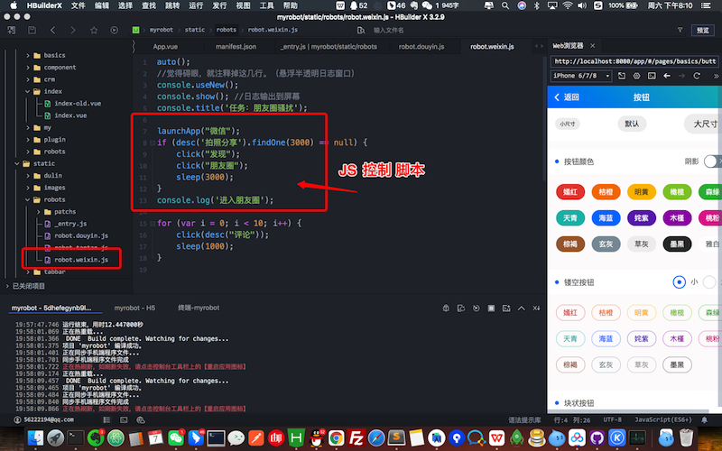
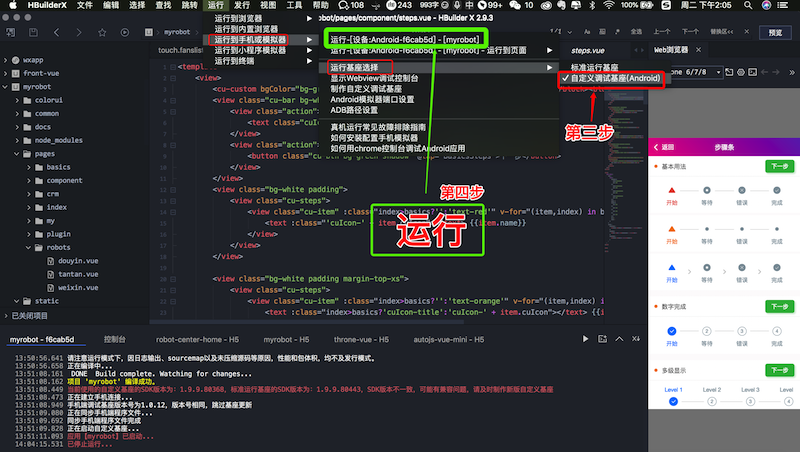

- 【API文档】:
- 开始 - 基于控件的操作
- Click - 基于控件的操作
- UiSelector - 查找控件
- Canvas - 画布
- Console - 控制台
- Crypto - 加解密与消息摘要
- Device - 设备
- Dialogs - 对话框
- Engines - 脚本引擎
- Events - 事件与监听
- Floaty - 悬浮窗
- Files - 文件系统
- Globals - 一般全局函数
- Http - HTTP
- Images - 图片与图色处理
- Keys - 按键模拟
- Media - 多媒体
- Modules - 模块
- Sensors - 传感器
- Shell - Shell命令
- Storages - 本地存储
- Threads - 多线程
- Timers - 定时器
- UI - 用户界面
- Work with Java - 调用Java API
用JS任意控制手机上的APP
目录
用JS任意控制手机上的APP#
1. 控制代码#
- 可以用如下简单的JS代码，控制手机上的第三方APP的行为，实现自动测试等目的 *
launchApp("微信");
click("发现");
click("朋友圈");
sleep(3000);
click(desc("评论"));
⚠️ 警告：本项目仅供大家学习交流，请勿用于非法目的 ⚠️
⚠️ 警告：本项目之衍生产品，其用途均与本项目作者无关 ⚠️
QQ群： 322962890#
如果喜欢这个项目，可以请赠我一包华子
2.开发环境#
2.1 下载代码 https://github.com/yooge/robot#
2.2 下载NodeJs#
2.3 下载安装开发工具HbuilderX#
建议下载这个版本：
链接: https://pan.baidu.com/s/1W0IEokddywK5iqoIx7biKw?pwd=1234
提取码: 1234

3.初始化环境#
3.0 用Hbuilder打开项目 (菜单/文件/打开目录)#
点击如图菜单可完成如下2步操作#
3.1 更新支持库(依赖包)，点击如下菜单，会执行 npm i#
3.2 更新运行基座，点击如下菜单，会执行 robot-tools init#

4.运行程序#

5.代码结构#

QQ群： 322962890#
如果喜欢这个项目，可以请赠我一包华子